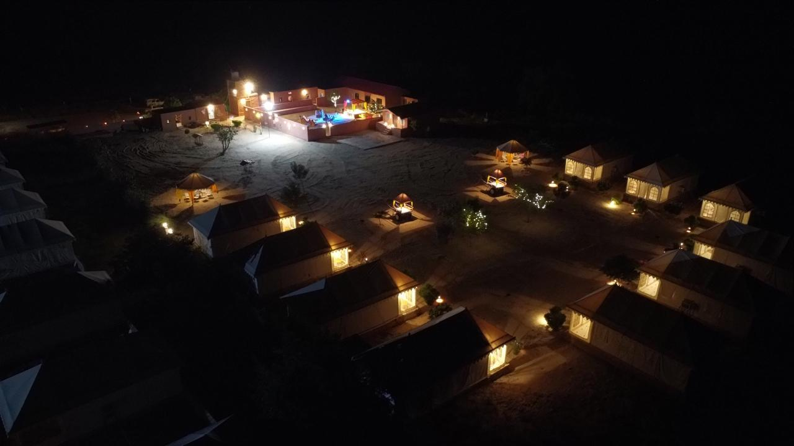
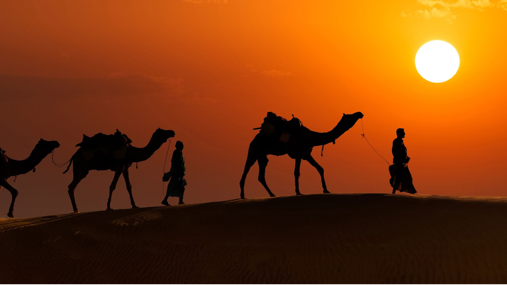
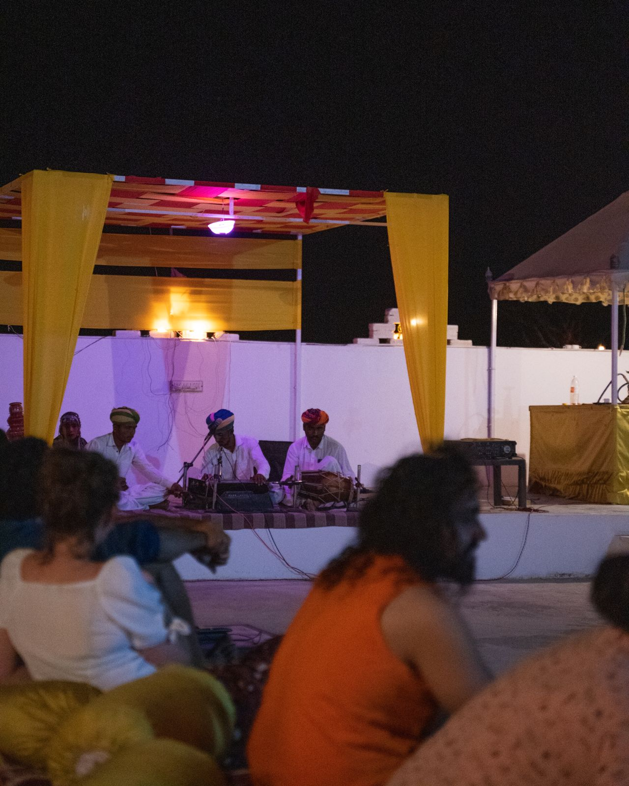
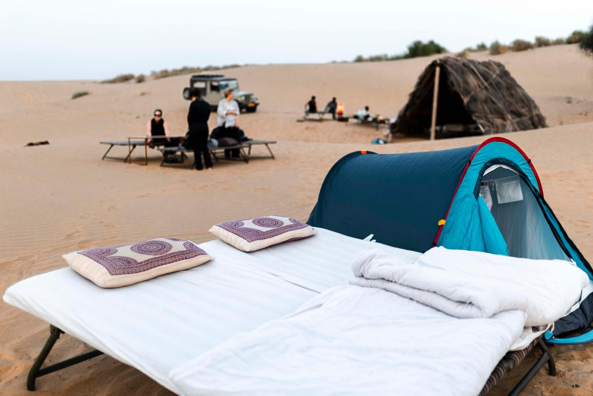
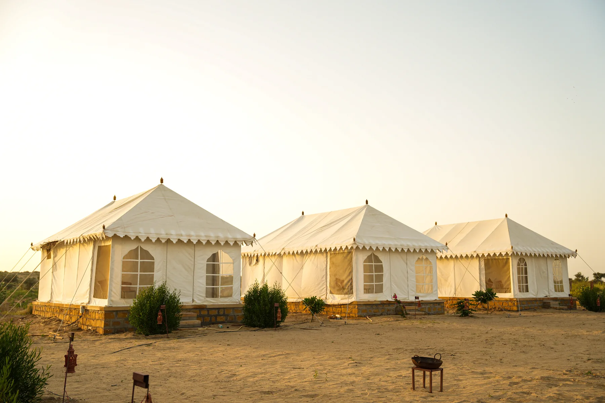
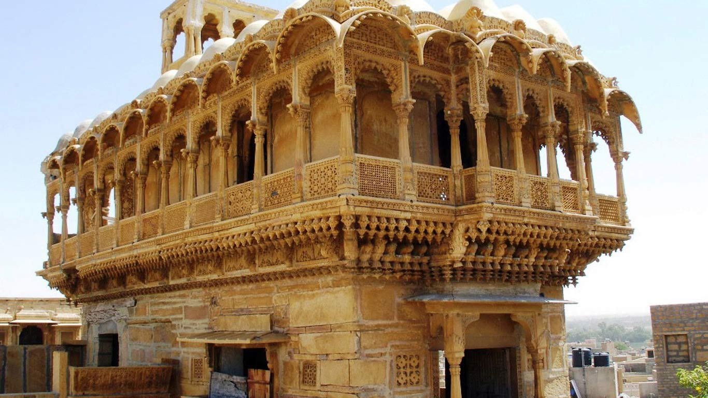
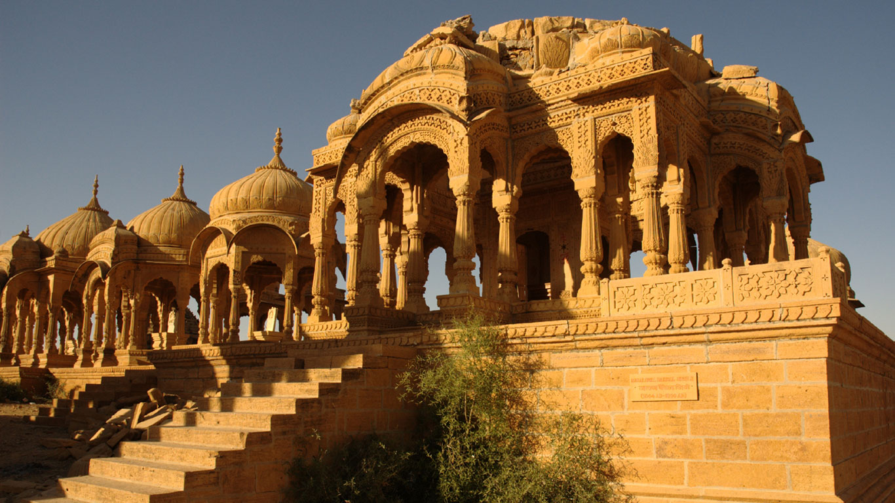

Before you enquire
The route. The details. Before you decide.
Compare the source-listed sequence for desert safaris, overnight stays, guided tours and road arrangements. These outlines help you ask better questions; they do not confirm current operation, availability, a fixed schedule or a price. The hotel must reconfirm the details for your dates.
A MORE THOUGHTFUL STAY
Plan the details that matter.
Move from room research to experiences, dining and arrival planning in a few clear steps.
Plan with confidence
Tell us what you’re planning.
Share your dates, party size and the experience you have in mind. This prepares a message in WhatsApp for you to review. Sending it is your choice; it does not confirm a booking.
Choose a detail
Go straight to the route you want to understand.
Use these links to jump to a desert outing, overnight stay, guided city tour, Fort heritage walk, car or road arrangement, or other route idea. Research ideas are conversation starters, not confirmed packages. Every source-listed outline still needs date-specific confirmation.
Afternoon to evening · source-listed outline
Sunset camel safari
The source describes a same-evening desert outing by jeep, a camel ride, sunset refreshments and dinner before returning to Jaisalmer. This is an outline, not a confirmed timetable or guarantee of current operation.

Typical sequence
- Leave Jaisalmer by jeep. Travel towards the desert route.
- Khuldhara and local stops. The source describes Khuldhara, a natural pond and a nomadic-village route.
- Ride by camel. Continue towards the dunes under the confirmed package plan.
- Watch the sunset. The source lists tea or coffee and snacks as the light changes over the dunes.
- Dinner and return. The source describes dinner prepared in the desert, followed by a return to Jaisalmer the same evening.
Desert evening · source-listed outline
Cultural desert evening
The source at-a-glance record describes an afternoon-to-evening option with no overnight stay; its FAQ asks guests to confirm whether the selected option is same-day or overnight. Ask the hotel to confirm the current format for your date.

Typical sequence
- Travel by jeep. Leave Jaisalmer for the desert route.
- Route stops and camel ride. The source describes Khuldhara, a natural pond and a nomadic-village route, followed by a camel ride.
- Arrive at camp. Settle in for the evening programme, subject to current camp operation.
- Tea, snacks and cultural programme. The source lists tea and snacks with folk music and a cultural programme.
- Vegetarian dinner and return. The source describes a buffet vegetarian dinner, then a return to Jaisalmer.
Overnight · open sky
Sleep under the stars
The current source lists one night in an open-air sleeping arrangement with a mattress and blankets, plus a camel ride, dinner, breakfast and jeep transport. It is not a Swiss Deluxe Tent. Confirm current operation, bathroom access, bedding and cold-weather arrangements for your date.

Typical sequence
- Depart by jeep. Travel from Jaisalmer towards the desert.
- Local route stops. The source describes Khuldhara, a natural pond and a nomadic-village route.
- Camel ride and sunset. Ride towards the dunes, then have tea, coffee and snacks as the sun sets.
- Desert dinner. The source lists a pure-vegetarian dinner prepared in the desert.
- Sleep outdoors. The listed setup is a mattress and blankets beneath the open sky.
- Breakfast and return. The source describes breakfast the following morning before returning to Jaisalmer.
Overnight · Swiss Deluxe Tent
Swiss tent overnight
The owner-provided source describes a tent stay combined with a desert route, camel ride, cultural programme and meals. These are source-listed details, not a guarantee that every tent or package currently has the same setup.

Typical sequence
- Travel by jeep. Depart Jaisalmer for the desert route.
- Local stops and camel ride. The source describes Khuldhara, a natural pond and a nomadic-village route before the camel-riding portion.
- Arrive at camp. Settle into the confirmed tent arrangement.
- High tea and cultural programme. The source lists high tea with snacks and folk music or a cultural programme.
- Dinner and overnight. The source describes a vegetarian buffet dinner and an overnight stay in a Swiss Deluxe Tent.
- Breakfast and return. The source describes breakfast before returning to Jaisalmer.
Guided heritage · half-day
Half-day guided Jaisalmer tour
The source describes a shorter guided introduction for visitors with limited time. The exact route is adapted to the agreed plan, opening hours, weather and guide availability.

Typical sequence
- Meet at the haveli. The source lists Garh Jaisal Haveli inside Jaisalmer Fort as the planned starting point, subject to confirmation.
- Walk through the Fort. Explore lanes, architecture and the living-fort setting.
- Visit selected havelis. Agree which heritage and architectural stops suit the route.
- Explore markets and old-city lanes. Allow time for questions and photographs along the agreed route.
- Finish at the agreed point. Confirm the end point before setting out.
Guided heritage · full-day
Full-day guided Jaisalmer tour
The source describes a broader guided day with more time for the Fort, historic havelis, markets and other agreed heritage stops. It is not a fixed route or a promise that every stop will be accessible.

Typical sequence
- Meet and start inside the Fort. The source lists Garh Jaisal Haveli as the planned starting point, subject to confirmation.
- Explore Fort heritage. Spend time on the Fort's lanes, architecture and local life.
- Visit selected havelis. Agree which heritage buildings and areas are appropriate for the day.
- Walk through markets and old-city areas. Allow time for local context, questions and photographs.
- Continue the heritage route. Use the additional time for further stops agreed with the guide.
- Finish at the agreed point. Confirm the end point and onward arrangements in advance.
Walking · Fort heritage
Jaisalmer Fort heritage walk
The source describes a planned walk focused on Fort heritage. Ask the hotel to confirm the current route and access for your date.

Places in the planned outline
- Jain temples inside Jaisalmer Fort. Explore temple heritage and architectural detail subject to visitor access and temple rules.
- Palace Museum. Confirm opening hours, admission and access before including it in the route.
- Heritage street walk. Continue through the Fort's lanes and streets to understand the living-fort setting and sandstone architecture.
Road travel · enquiry only
Car and road travel arrangements
The owner-provided source lists SUV and sedan arrangements for journeys across Rajasthan and Delhi, including desert pickup or drop-off and intercity routes. This is not a quote or confirmation that a particular vehicle is available.
What to include in your request
- Travel date. Share the date you need the journey, without assuming a vehicle is reserved.
- Pickup and destination. Give exact locations and planned stops so the route can be checked.
- Passengers and luggage. State traveller count and luggage needs so the vehicle can be discussed.
- Vehicle preference. Tell the hotel whether you would prefer an SUV or sedan.
- Confirm the quote. Ask for route, pickup window, vehicle, inclusions and total fare in writing before agreeing.
Before setting out for the haveli, allow about 300 metres (around 5–6 minutes on foot) from Fort Parking or about 200 metres (around 3–4 minutes) from the fort entrance. These estimates can vary with foot traffic; confirm your meeting point and current access before travelling.
Read the haveli arrival guidanceIdeas to discuss · not confirmed packages
Other routes and interests
The source catalogue includes research themes that may help start a conversation. They are not ready-to-book tours, and this page does not promise that a private route can be arranged.
Ideas mentioned in the source
- Golden sandstone havelis. Historic architecture and carved facades.
- Jain temple heritage. Subject to current visitor rules.
- Photography and landscape viewpoints. Ask which viewpoints and access arrangements are feasible.
- Gadisar Lake, Bada Bagh or Vyas Chhatri. Possible topics to discuss, not a confirmed combined route.
- Kuldhara and the desert edge. Subject to current access and route feasibility.
- Natural-history interests. Need a route and operator to be confirmed.
Before any commitment
Confirm the details in writing.
Ask the hotel to confirm the exact route, start and finish window, transport and meeting point, access or terrain, guide and language where relevant, itemized inclusions and exclusions, total price and cancellation terms. Do not rely on an outline as confirmation that an option is operating. An enquiry is not a reservation.